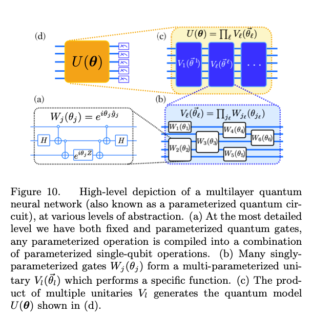

Understanding the Multilayer Quantum Neural Network
The TensorFlow Quantum paper by Broughton, et al. Section III Theory of Hybrid Quantum Classical Machine Learning uses a graph to demonstrate the inner workings of a multilayer quantum neural network1. Here, we attempt to break the graphic down, piece by piece, to understand what is happening.
The Diagram by Broughton, et al.

The caption describes from the lowest level to the highest level. In this way, it first covers the most detailed aspects and then becomes more general. However, this is a front-heavy approach. In my post, I re-iterate the caption in my own words, starting with the highest level and proceeding to the lowest level.
The Unitary
The paper labels the highest level graphic as (d). It shows a general unitary representing the entire quantum model. It can be considered a black box which receives input and produces results as output.
In the next level, (c), U is equivallent to the product of multiple smaller unitaries, named V. The multiple horizontal lines indicate that V is multi-parametereized, e.g. it accepts more than one input at a time. I believe these inputs are processed in parallel.
In (b), V is made up of the product of many quantum gates named W. These accept only a single input at a time.
Finally (a) shows that each W is composed of exponentials working with single-qubit operations.
References
-
Broughton, Michael, et al. “TensorFlow Quantum: A Software Framework for Quantum Machine Learning.” ArXiv.org, 6 Mar. 2020, arxiv.org/abs/2003.02989. ↩︎